치료실
하일렌요양병원은 입원부터 외래까지, 치료 이후의 회복 여정을 함께합니다. 치료실은 온열암치료실, 암재활치료실, 림프관리실, 면역 및 통증 치료실, 외래센터 블룸 다섯 곳입니다. 암 치료는 지금 다니시는 대학병원·암병원에서 그대로 이어 가시고, 하일렌요양병원은 입원, 단기입원, 외래 진료로 치료 중 생기는 부작용·합병증을 관리하고 치료 후 회복을 돕습니다.
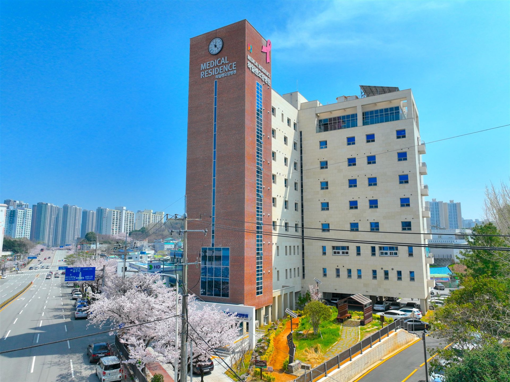
- 외래 회복치료
- 고주파온열암치료 · 고압산소치료 · 도수치료 · 림프 관리 · 고용량 비타민C · 면역 주사제 · 영양공급수액
- 이용
- 입원 환자분과 외래 환자분이 함께 이용하십니다.
- 문의
- 원내 상담실 · 카카오톡 채널 · 062-439-1000
치료와 프로그램 안내
치료 단계에 맞춘 치료
아래 치료는 건강한 일상으로 돌아가시는 것을 목표로 합니다.
아래에서는 각 치료가 어떤 방법인지 소개합니다. 어떤 치료를 받으실지는 주치의가 몸 상태를 살피고 환자분과 이야기를 나눈 후 함께 정합니다.
항암 치료를 받는 동안에도 주치의가 환자분 상태를 보고 온열 치료, 고압산소치료, 면역 주사제 치료를 보조 치료로 함께 진행합니다. 항암 치료로 생기는 면역 저하와 암성 피로 같은 증상을 덜어 드리려는 치료입니다. 보조 치료는 대학병원·암병원의 수술·항암·방사선 치료를 대신하지 않습니다. 모든 환자분께 같은 치료를 권하지도 않습니다.
수술·항암·방사선 치료 시기별로 하는 일은 부작용·합병증 치료에, 분야별 진료 지침과 원내에서 하는 일은 증상 및 분야별 진료 지침과 관리에 있습니다.
온열암치료실
온열암치료실은 2층에 있습니다. 고주파온열암치료실, 고압산소치료실, 전신온열실로 구성되어 있습니다.
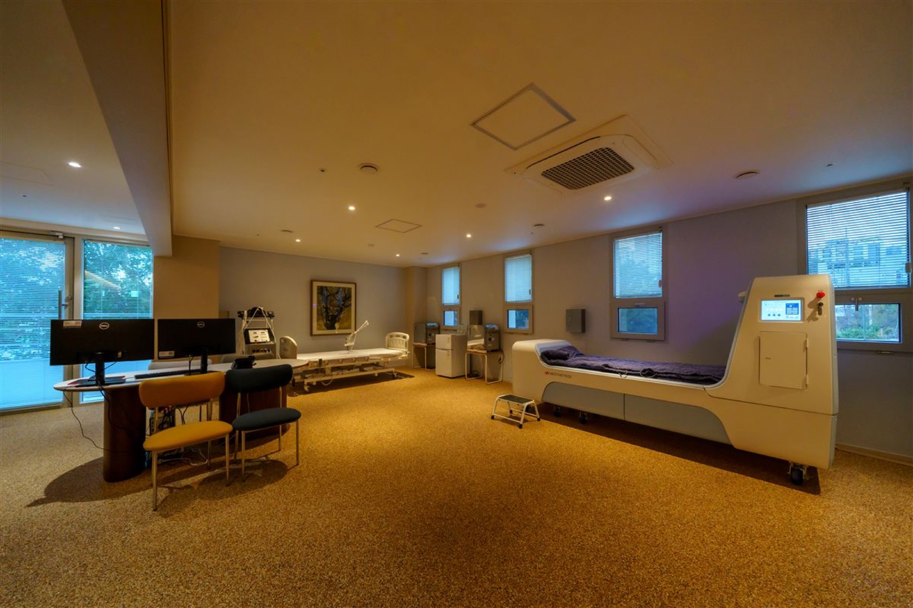
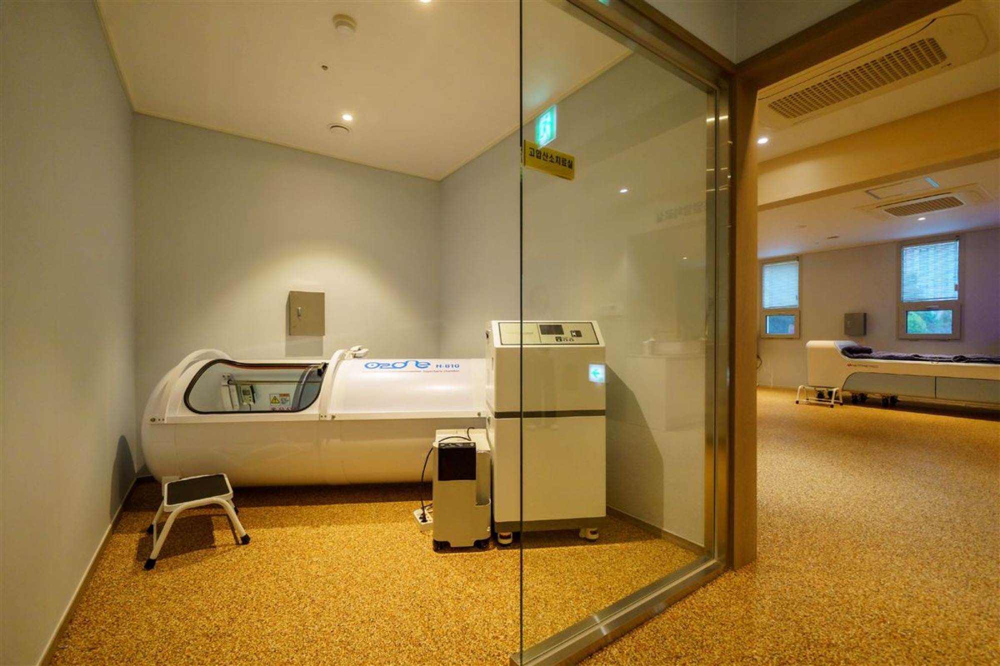
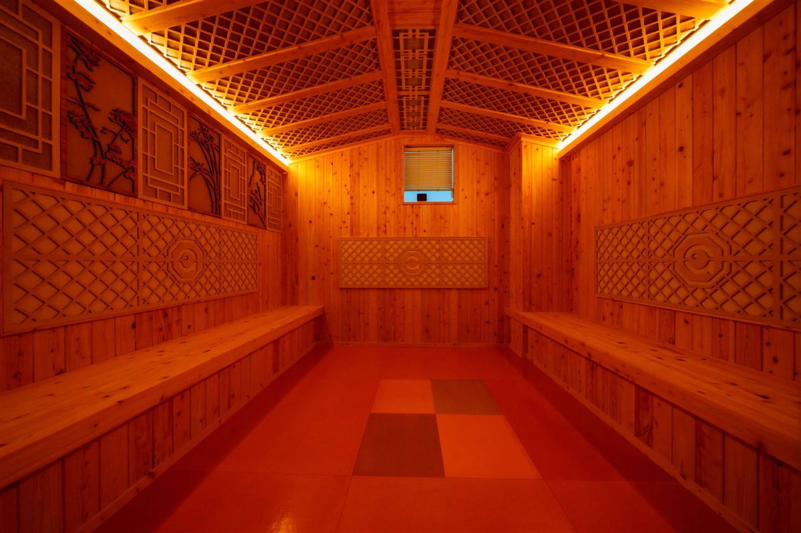
온열암치료실에는 탈의실과 샤워장이 있습니다. 운동과 치료 후의 개운함을 더해 주는 쾌적하고 청결한 공간입니다.
고주파온열암치료
고주파온열암치료(High-Frequency Hyperthermic Cancer Therapy)는 고주파로 암 조직에 열을 가하는 치료로, 항암·방사선 치료와 함께 받으시는 보조 치료입니다.
고압산소치료
고압산소치료(Hyperbaric Oxygen Therapy)는 높은 압력의 캡슐 안에서 고농도 산소를 마시는 치료입니다. 미국 해저고압의학회(UHMS)는 방사선 치료 후 늦게 나타나는 피부·연부조직 손상을 고압산소치료가 쓰이는 경우로 꼽습니다.
전신온열치료
전신온열치료(Whole-body Hyperthermia Chamber)는 고주파온열암치료 전에 체온을 조금 올려, 고주파로 암 조직을 데우는 시간을 줄이려고 함께 시행합니다.
암재활치료실
암재활치료실은 3층에 있습니다. 통증·도수·림프·레이저 치료실이 있고, 도수치료 · 암재활 운동치료 · 통증치료를 합니다.
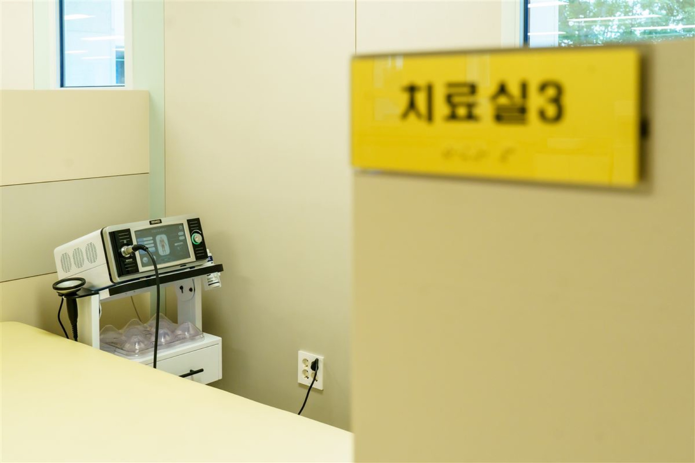
3층 통증치료실에서는 비침습적 무통증 신호요법 기기(통증치료기)와 도수치료로 통증을 다룹니다.
암재활 운동치료는 주치의 처방으로 받으시며, 회복 프로그램에서 안내합니다.
도수·림프·통증·고주파 치료는 외래 환자분도 입원 환자분과 같은 시설에서 받으실 수 있습니다.
림프관리실
림프관리실은 3층 암재활치료실 안에 있습니다. 암 치료로 인해 발생하는 부종 및 피부손상 등을 관리합니다.
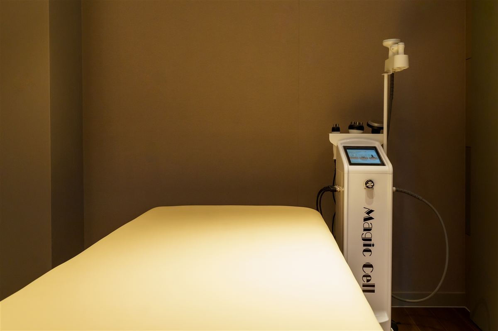
유방암·부인암, 갑상선암을 포함한 경부 림프절 제거 수술을 받은 후 생길 수 있는 림프부종에 대해 예방 운동 교육과 재활 치료를 시행합니다. 림프부종이 생긴 후에는 림프부종 도수치료 등으로 관리합니다. 유방암 치료 후 생긴 림프부종에는 림프부종 도수치료와 함께 저출력 레이저 장비(LTU-904)를 씁니다.
림프부종 진료 지침과 원내에서 하는 일은 증상 및 분야별 진료 지침과 관리의 림프부종 항목에 있습니다.
면역 및 통증 치료실
면역 주사제와 통증유발점 주사·자율신경 주사치료를 하는 곳입니다. 면역주사실은 9층 외래센터 블룸에, 통증치료실은 2층에 있습니다. 2층 통증치료실에서는 자율신경 주사를 놓고, C-arm(씨암)이라는 실시간 엑스레이 투시 장비로 주사 바늘이 들어가는 자리를 화면으로 보며 통증 주사를 놓습니다. 갑상선을 비롯한 암 진료에 필요한 확인도 이곳에서 합니다.
면역 치료
면역주사실에서는 항암 치료를 받는 동안에도, 치료를 마치신 후에도 면역 주사제 치료를 받으실 수 있습니다. 의료진이 곁에서 세심하게 살피며 면역 주사제를 관리합니다.
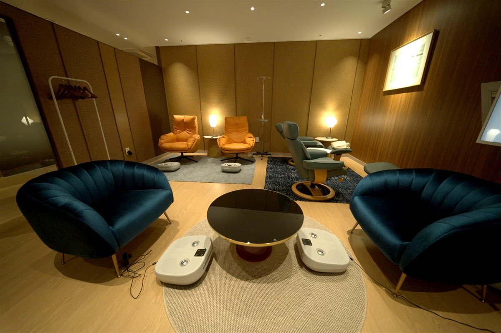
면역 주사제(고용량 셀레나제, 고용량 비타민C, 싸이모신 알파1, 미슬토, 비타민D, 글루타치온, 이뮤코텔, 비타민 주사)와 자율신경계 안정화 치료를 합니다. 먹는 약으로 메시마F가 있습니다. 비급여 항목과 금액은 비급여 항목 안내에 있습니다.
- 싸이모신 알파1은 사람 몸에 원래 있는 면역조절 펩타이드입니다. T 림프구와 NK 세포 같은 면역세포의 기능 조절에 관여한다고 알려져 있습니다.
- 미슬토는 유럽 전나무·사과나무·물푸레나무·떡갈나무에 붙어 자라는 미슬토(겨우살이)의 추출물로, 항암 치료와 함께 쓰는 보조 치료제입니다. 주성분으로 렉틴과 비스코톡신이 꼽힙니다.
- 셀레나제는 셀레늄 주사제입니다. 셀레늄은 몸속 25가지 이상의 단백질과 효소를 만드는 데 필요한 미량원소로, 항산화와 항염증, 갑상선 호르몬 활성화에도 관여합니다. 보충이 필요한지는 주치의가 환자분 상태를 보고 정합니다.
- 고용량 비타민C는 항암 치료 중 보조 요법으로 씁니다. 말기 암 환자 39명이 참여한 국내 연구(J Korean Med Sci, 2007)에서는 투여 후 피로 등 증상 점수가 낮아졌다고 보고했습니다. 대조군이 없는 소규모 연구여서 모든 환자분께 같은 결과를 기대하기는 어렵습니다.
- 글루타치온은 몸속 항산화 효소가 쓰는 재료(기질)로, 활성산소에 세포가 상하는 것을 막는 데 관여합니다.
- 이뮤코텔(이뮤노시아닌)은 면역계를 자극하는 단백질 주사제로, 항암 면역 치료를 보조하는 데 씁니다.
상처와 배액관은 간호팀 및 주사·상처관리 전담팀이 살핍니다.
외래센터 블룸
외래센터 블룸은 9층에 있는 외래 회복치료 공간입니다. 건강한 삶이 다시 피어나는 곳, 환자분들의 활기찬 일상을 위한 외래 진료 공간입니다. 면역 주사제 치료를 받는 면역주사실(외래주사실)이 이곳에 있습니다.
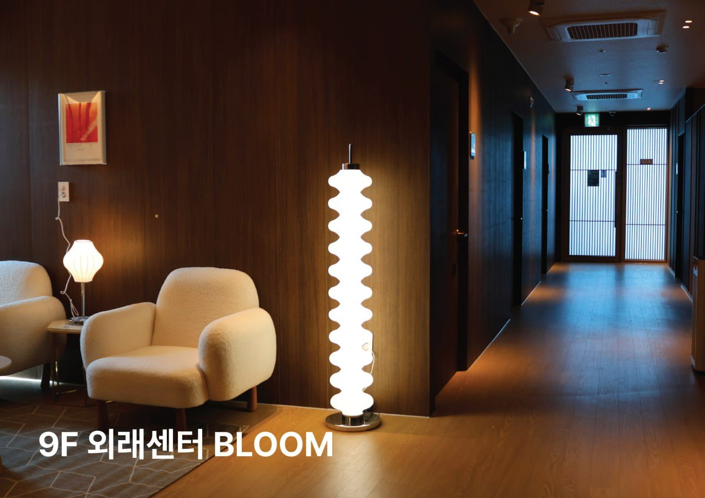
리클라이너 주사실, 세라젬 의료용 안마기, 소금편백찜질방, 발마사지기가 있어 휴식과 치료를 함께 누리실 수 있습니다. 소금편백찜질방은 온열 환경 속 편안한 휴식 공간입니다. 세라젬 의료용 안마기와 소금편백찜질방은 입원 환자분도 이용하실 수 있습니다.
외래 진료로 받으실 수 있는 회복치료 7종과 이용 방법은 단기입원·외래 안내에서 보실 수 있습니다.
2층 회복 정원과 황토 어싱장
정원과 어싱장이 있는 자연 회복 공간입니다. 2층 로비 앞에 있습니다.
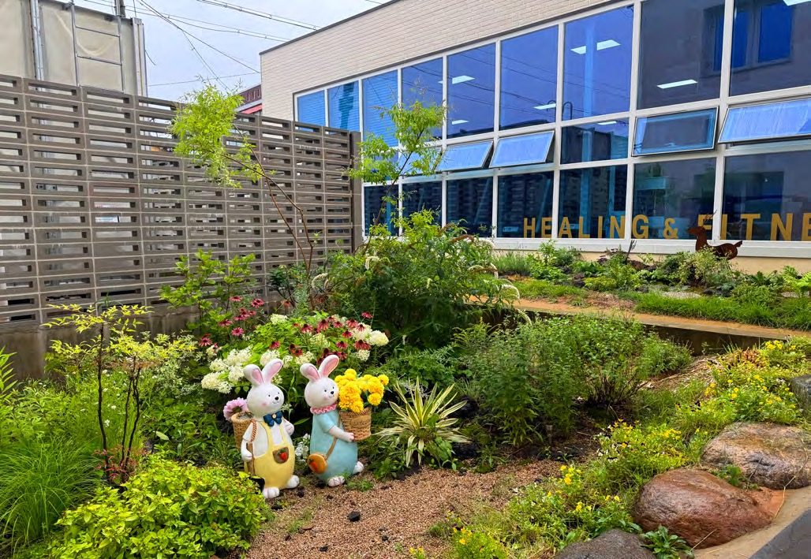
가드닝 클래스에서 환자분들이 심었던 정원은 겨울을 지나 초록빛으로 무르익었고, 새로 조성한 정원 공간도 나란히 문을 열었습니다.
맨발로 흙을 밟는 어싱장은 2층 회복 정원 앞과 1층 야외 두 곳에 있습니다. 2층 어싱장은 회복 정원과 붙어 있어 이용하시기 더 편합니다. 정해진 시간 없이 낮 동안 언제든 걸으실 수 있고, 잔잔한 음악이 흐릅니다.
2층 바깥에는 힐링 & 휘트니스센터와 골프 퍼팅장이 있습니다. 개인 운동과 휴식을 자유롭게 하실 수 있고, 가벼운 퍼팅 연습으로 몸을 움직이실 수 있습니다.
병원 앞 산책로와 1층 야외 황토 어싱장
길 건너 상록근린공원과 광주시립미술관 상록전시관·하정웅미술관 산책로를 걸으실 수 있습니다.
1층 로비 앞에는 야외 황토 어싱장이 있습니다. 맨발 걷기와 산책을 하실 수 있는 공간으로, 바로 앞에 광주시립미술관·하정웅미술관이 있어 예술을 곁에 두고 어싱을 즐기실 수 있습니다.
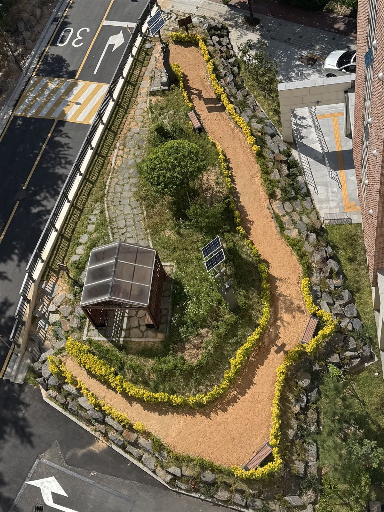
층별 안내
건물 안내판처럼 위층부터 적었습니다. 처음 오시는 분은 1층에서 중앙 엘리베이터를 타고 2층 원무과로 올라오시면 됩니다.
- 10층VIP실 · 스카이라운지 식당 힐링프로그램실 · 기도실
스카이라운지 식당은 평소 식사와 다과를 즐기시는 곳이며, 외부 초청 공연 같은 여러 문화 활동도 열립니다. 힐링프로그램실은 정서 회복을 돕고 환자분들끼리 자유롭게 모임 활동을 하시는 공간입니다. 기도실에서는 개인 명상도, 각자의 종교에 따른 기도도 하실 수 있습니다.
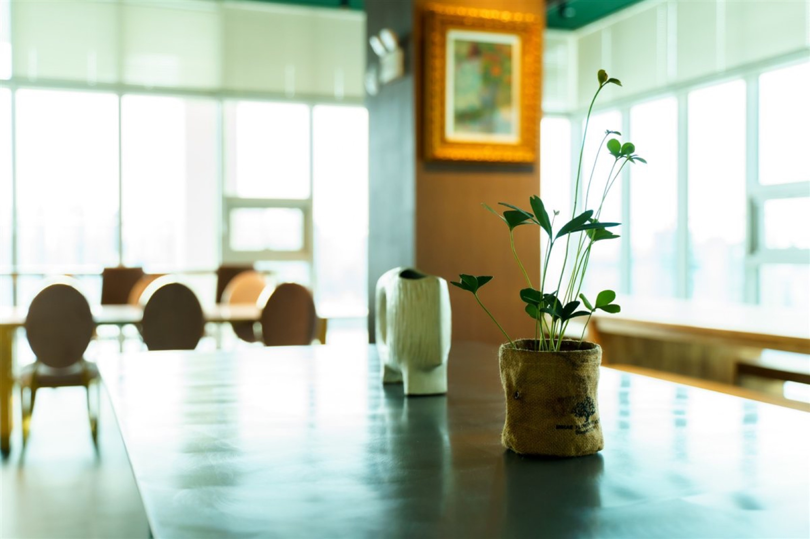
스카이라운지 식당 
힐링프로그램실 - 9층외래센터 블룸 면역주사실 · 세라젬 의료용 안마기 · 소금편백찜질방 병실
세라젬 의료용 안마기와 소금편백찜질방은 입원 환자분도 이용하실 수 있습니다.
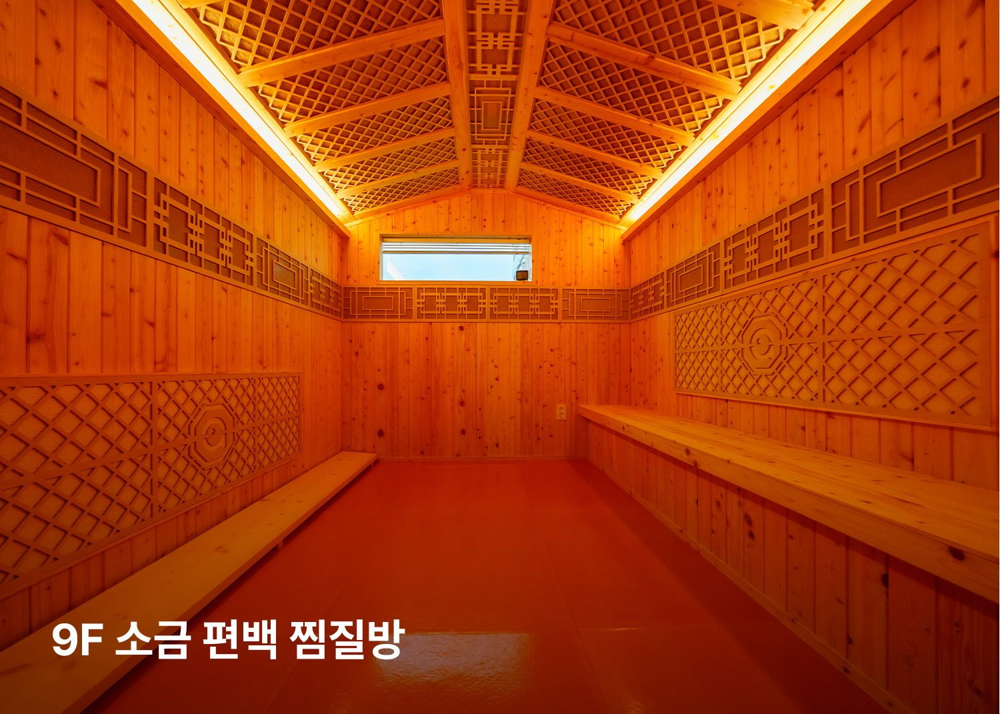
소금편백찜질방 - 5~9층병실 특실 · 1인실 · 2인실 · 4인실
간호사실은 5층과 8층에 있습니다. 세탁실은 6·7·9층에 있습니다. 병실 사진과 병실료는 입원 안내의 병실 고르기에서 보실 수 있습니다.
- 3층
- 2층온열암치료실 고주파온열암치료실 · 고압산소치료실 · 전신온열실 통증치료실 · 임상병리실 · 방사선실 · 약국 원무과(접수·수납) · 상담실 · 진료실 1 · 2 · 회복 정원과 황토 어싱장
임상병리실에서는 혈액검사와 심전도 검사, 자율신경검사, 인바디 검사 등을 시행하고, 방사선실에서는 엑스레이 촬영을 합니다. 2층 통증치료실은 C-arm(실시간 엑스레이 투시 장비)으로 보며 주사하는 곳입니다. 상담실은 처음 오시는 분의 방문 상담을 하는 곳입니다. 입원·외래·단기입원 환자분은 이곳에서 치료 일정 담당자를 처음 만나시고, 그 후의 일정 조정과 치료 계획은 카카오톡 채널로 주고받습니다.
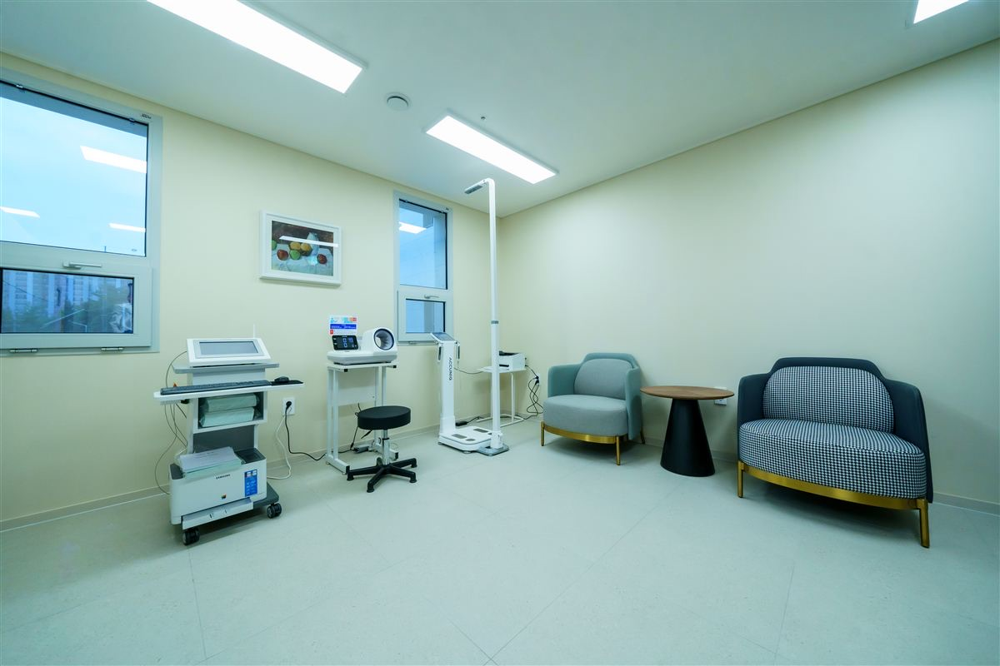
임상병리실 - 1층갤러리(면회 장소) 야외 황토 어싱장 · 주차장
갤러리는 환자분과 보호자가 함께 머무는 휴식 공간입니다. 면회 기준은 오시는 길·면회에서 보실 수 있습니다.
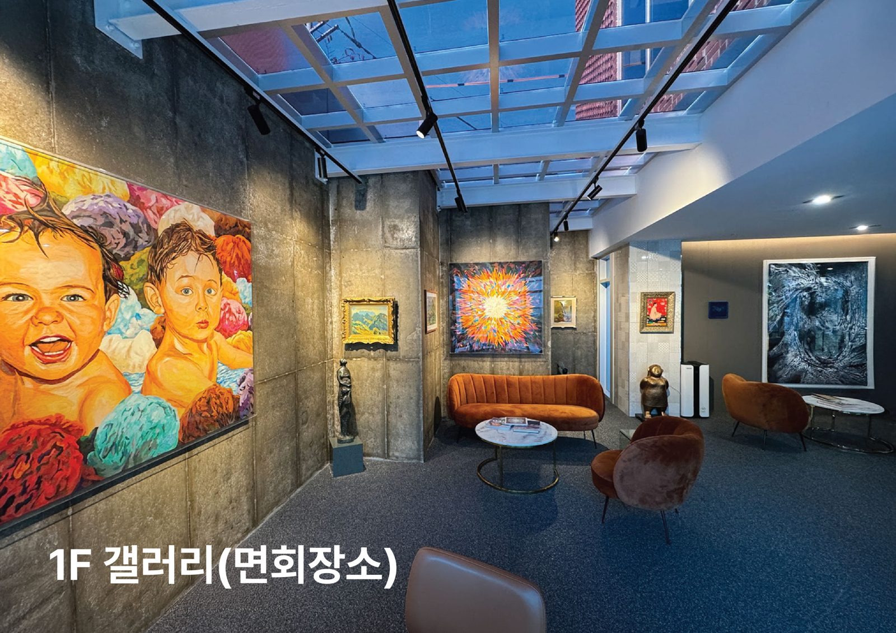
갤러리(면회 장소)
부작용·합병증 치료
하일렌요양병원은 국내외 암 관련 학회·기관의 진료 지침에 따라 수술·항암·방사선 치료 중 생기는 부작용과 합병증을 치료하고, 회복에 도움이 되는 치료를 환자분 상태와 회복 단계에 맞춰 진행합니다. 수술 후 관리와 항암 부작용 치료는 현재 진료 중인 대학병원·암병원의 치료 방침에 맞춰 시행합니다. 의료진이 24시간 상주하는 당직 체계를 운영합니다.
수술 후
통증과 상처, 합병증을 살피고 관리합니다. 수술 부위는 수술받으신 병원의 치료 지침에 따라 간호팀과 주사·상처관리 전담팀이 이어서 살펴 드립니다.
항암 치료 중
발열, 오심·구토, 설사, 피로, 손발 저림 같은 부작용 증상과 면역 저하 상태를 관리하고, 수액과 영양을 공급합니다. 필요시 원내에서 혈액검사와 흉부 엑스레이 촬영을 하고 그 결과를 주치의가 확인합니다.
방사선 치료 중
피부 상태와 방사선 치료로 인해 발생한 피로 등 증상을 관리합니다. 입원해 지내시면서 대학병원·암병원으로 방사선 치료를 다니셔도 되고, 외래 진료로 오셔도 됩니다.
치료 후
떨어진 체력과 신체 기능의 회복을 돕습니다. 외래 치료, 단기 집중 치료, 입원 치료로 계속해서 관리합니다.
증상 및 분야별 진료 지침과 관리
분야마다 국내외 진료 지침이 권하는 내용과 하일렌요양병원이 원내에서 하는 일을 함께 적었습니다.
오심·구토
다국적암지지요법학회(MASCC)·유럽종양내과학회(ESMO) 지침(2023)은 항암제의 구토 위험도에 맞춰 예방약을 쓰도록 권고합니다. 예방약을 쓰고도 생기는 오심·구토에는 약을 더하고 식사 상담을 함께 하도록 제안합니다. 하일렌요양병원은 대학병원·암병원에서 처방받으신 예방약을 원내 처방과 함께 관리합니다. 그래도 오심·구토가 생기면 주치의가 진료해 약을 더하거나 수액을 처방합니다.
발열·호중구감소
항암 중 호중구가 낮을 때 열이 나면 혈액검사와 배양검사를 하고 지체 없이 항생제를 쓰도록 국내외 지침이 권고합니다. 국내 지침은 한국보건의료연구원 주관으로 대한감염학회 등 8개 학회가 참여해 2011년에 냈고, 국외 지침은 미국임상종양학회(ASCO)·미국감염학회(IDSA)가 2018년에 냈습니다. 입원 중 열이 나면 병동 간호사가 주치의에게 보고합니다. 주치의는 혈액검사를 하고 필요하면 흉부 엑스레이도 촬영합니다. 검사 결과에 따라 초기 안정화 조치를 하고, 지금 항암 치료를 받고 계신 대학병원·암병원과 상의해 추가 치료를 진행합니다. 필요하면 대학병원·암병원으로 신속히 전원합니다. 열이 없는 호중구감소는 진료 지침에 따라 진료하고 치료합니다. 집에서 열이 날 때 어디로, 몇 도부터 연락할지는 대학병원·암병원의 안내를 따라 주세요.
장루 관리
대장암·직장암 수술로 장루가 있는 분은 수술받으신 병원의 지침을 확인한 간호팀과 주사·상처관리 전담팀이 장루 주변 피부와 상처, 변 양상을 주기적으로 살피고, 환자분이 장루 관리에 익숙해지시도록 함께 관리합니다.
케모포트 관리
케모포트를 통한 수액과 약물 투여, 연결 바늘 관리와 소독은 치료 지침에 따라 원내 담당 의사와 주사·상처관리 전담팀 의료진이 관리합니다.
손발 저림
ASCO 지침(2020)은 손발 저림을 예방하는 약으로 권고하는 것이 없다고 밝힙니다. 같은 지침은 저림을 견디기 어렵거나 일상에 지장이 있으면, 항암을 미루거나 줄일지를 대학병원·암병원 의료진이 환자분과 상의하도록 권합니다. 원내 주치의는 환자분 증상의 정도에 따라 약물을 투여합니다. 증상이 악화되면 항암 치료 중인 대학병원·암병원 담당의와 상담하고 치료 방향을 결정하시도록 권고드립니다.
방사선 피부 반응
MASCC 지침(2023)은 국소 스테로이드제와 피부 보호 필름 등을 방사선 치료로 인한 피부 부작용 예방법으로 제시합니다. 알로에 제품 등은 권하지 않습니다. 입원 중에는 방사선 치료 부위의 피부를 살피고, 피부 반응이 생기면 원내 주치의와 주사·상처관리 전담팀이 확인한 후 증상에 맞게 처치합니다. 대학병원·암병원 담당의와도 상의하도록 합니다.
암성 통증
보건복지부·국립암센터 「암성통증관리지침 권고안」은 통증을 정기적으로 평가하고, 먹는 진통제를 정해진 시간 간격으로 쓰며, 갑자기 심해지는 통증에 대비한 진통제를 미리 처방받아 준비하고, 장기간 마약성 진통제 사용으로 생길 수 있는 변비를 예방하는 것을 원칙으로 제시합니다. 하일렌요양병원에서는 통증 점수와 함께 아픈 부위와 양상, 아픈 시점, 잠과 식사에 미치는 영향을 평가해, 주치의가 그 내용을 처방에 반영합니다. 통증이 줄지 않거나 갑자기 심해지면 대학병원·암병원 진료가 필요한지 판단해 안내해 드립니다.
림프부종
국제림프학회(ISL) 합의문(2023)은 피부 관리, 도수 림프 배출, 압박, 운동을 함께 하는 복합 치료와 평생 이어 가는 유지 관리를 권고합니다. 붓기는 양쪽 팔다리를 같은 방법으로 재어 비교하도록 합니다. 원내에서는 림프절 수술을 받으신 유방암 환자분의 양쪽 팔 같은 위치 둘레를 비교해 림프부종 여부를 판단합니다. 림프부종 치료는 치료 시기와 관계없이 림프관리실에서 이어 갑니다.
영양
유럽임상영양대사학회(ESPEN) 지침(2021)은 섭취량과 체중 변화를 정기적으로 확인하도록 권고합니다. 드시는 양이 부족하면 식사 상담과 증상 치료, 먹는 영양 보충부터 단계적으로 돕도록 권고합니다. 임상 근거가 없는 식이요법은 권하지 않습니다. 입원 중에는 영양컨시어지가 드신 양과 불편한 점을 주기적으로 기록하고, 주치의가 그 기록을 보고 식사 처방을 조정합니다. 잘 드시지 못하는 날이 이어지면 영양공급수액을 처방하기도 합니다.
운동
ASCO 지침(2022)은 완치 목적의 치료 중에도 유산소 운동과 근력 운동을 하도록 권고합니다. 미국스포츠의학회(ACSM) 주관 국제 합의(2019)는 림프부종이 있어도 감독 아래 단계적으로 하는 근력 운동은 안전하다고 봅니다. 최근 폐·복부 수술을 받으셨거나 장루, 뼈 전이가 있는 경우 등은 운동 전에 주치의가 환자분의 상태를 보고 가능한 운동 범위를 판단하도록 합니다. 하일렌요양병원에서는 주치의가 환자분 상태를 보고 환자분과 상담한 후 운동 범위를 정합니다. 그 범위 안에서 근력과 몸의 균형감 강화 등을 통한 암재활 운동치료를 시행해 환자분의 일상 복귀를 돕습니다.
자주 묻는 질문
입원하지 않아도 치료실의 치료를 받을 수 있나요?
입원하지 않으셔도 외래 진료로 고주파온열암치료, 고압산소치료, 도수치료, 림프 관리, 고용량 비타민C, 면역 주사제, 영양공급수액을 받으실 수 있습니다. 외래 일정은 원내 상담실에서 안내해 드립니다.
치료실 이용과 입원·외래·단기입원 상담은 원내 상담실에서 도와 드립니다. 궁금한 점이 있으시면 언제든 편하게 물어보세요.
제공 하일렌요양병원 · 갱신 2026-11-14